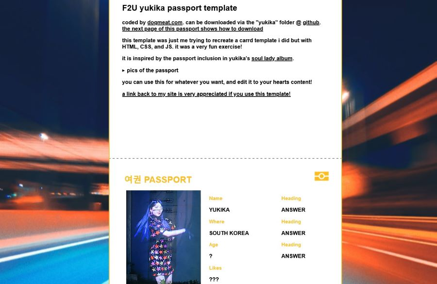
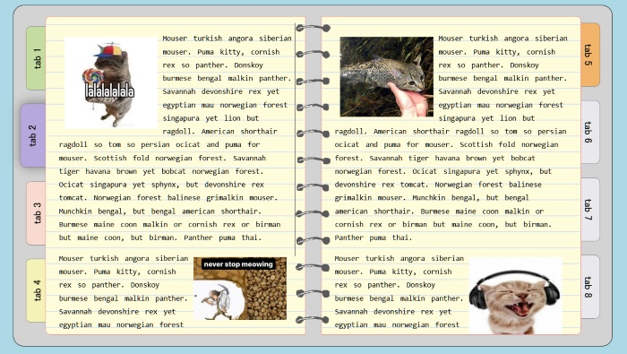

templates
F2U layouts and templates coded by me for you to use on your website! VGen shop for easy downloads!
rules
JS sony walkman mp3 player

i had one of these when i was little so i wanted to try doing a JS music player (using sayantanm19's js-music-player) that looked as much as the real thing. it was very fun to do tbh! i implemented a little playlist screen in which you can select what song to play.
it looks best on firefox, but looks okay on chrome. more details about issues can be found on the github repo.
yukika passport
a fun exercise on CSS animations and to see how close i could get to doing all of this with my current knowledge of JS. inspired by yukika's soul lady album and the passport inclusion! i talk more about it in the preview :3
notebook

since i was making the notebook code for my resources page, i wanted to clean to code up eventually so i could share it with others and here is the result!